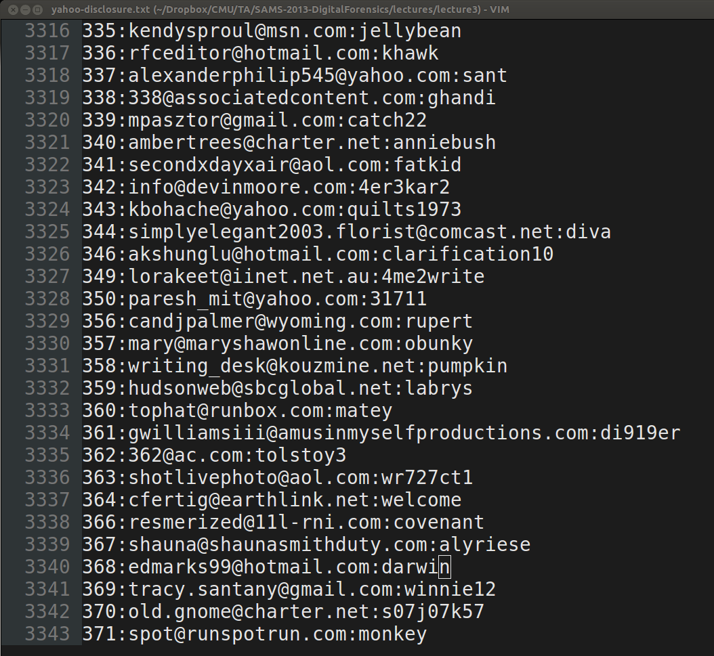

Cyber Security
Hands-On Cracking
Built with reveal.js
Unpatched Windows

Plaintext?
Goals
1Review Hashes
2Create Our Own Hash Function
3Create Cracking Scripts
4Investigate Yahoo and LinkedIn Passwords
Hashes
1Take an arbitrary amount of bytes and map them into a fixed size amount of bytes.
2Use a one-way function: simple to compute, difficult to reverse.
3Ideally it is also injective: mapping each valid input to a distinct hash value.

Practical Hashing
Achieves the first two properties, but generally only the first.
#!/usr/bin/env pythonimport math
import sys__USAGE__ = '''%s <file to hash>'''def long_to_bytearray(l):
return bytearray.fromhex(hex(l)[2:-1])def SAMS_hash(data):
passif __name__ == '__main__': if len(sys.argv) < 2:
print __USAGE__ % sys.argv[0]
exit(1) with open(sys.argv[1]) as f:
data = f.read()
print SAMS_hash(data)Choose your own hash adventure...
http://goo.gl/miinrh
Easy to use primes reference.
Ophcrack is scriptable
http://goo.gl/vawLnvYahoo and LinkedIn Leaks
Yahoo: http://goo.gl/Q1OeGj
LinkedIn: http://goo.gl/nKfPAa
Cracking LinkedIn
Dictionary: http://goo.gl/dOL1Hz